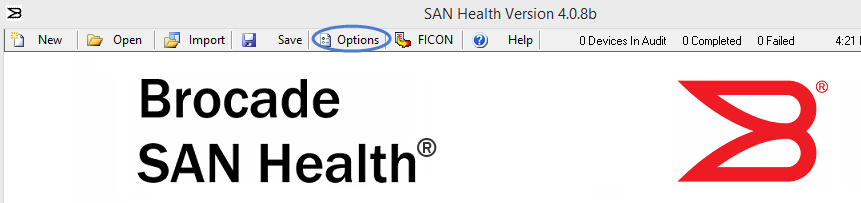
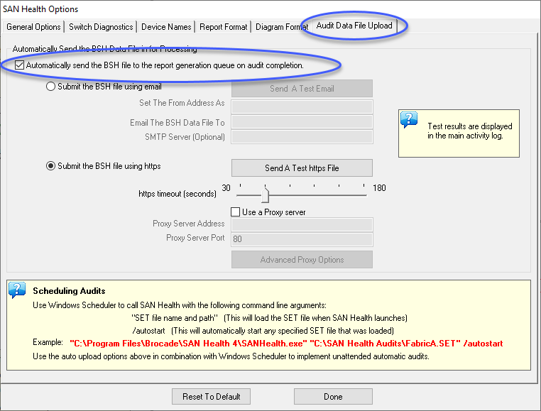
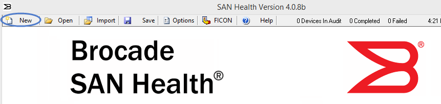
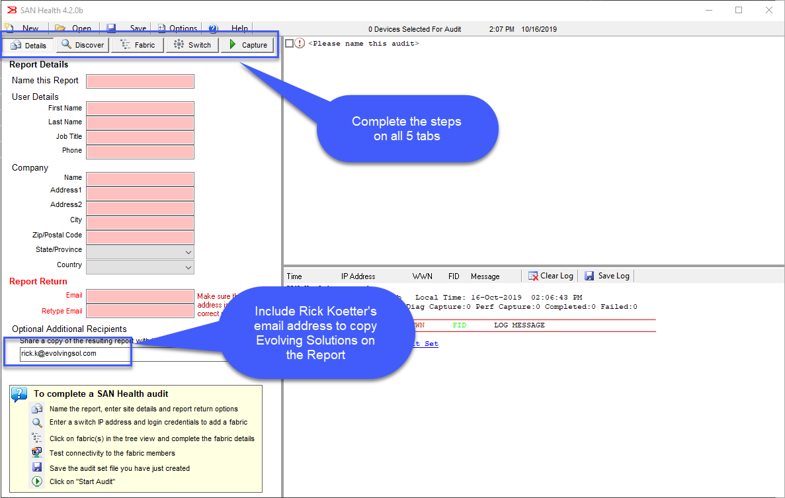
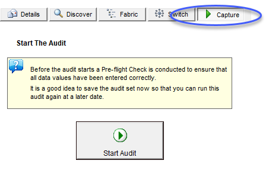

Brocade SAN
Documentation Links
Support Information
Reference Guides
Microcode Guidance
Implementation
Health Check
Load Firmware From USB
usbstorage -e usbstorage -l firmwaredownload -U v9.2.1_EXT
Implementation Checklist
These are the typical items that should be reviewed and/or configured when setting up a new Brocade SAN switch/director. While many of these settings can be set in WebTools, the CLI commands are listed here for a simlper checklist.
User Settings
- Enable root access optional
-
Set root password to pre-defined password (Login as root/fibranne and it will prompt you to change)
-
Set admin password to pre-defined password
Name and Address
- Set the switch name
- Set IP address, subnet mask, gateway
- Set the Registered Organization Name (Directors Only)
Data Center Settings
- Verify Management Port Speed (Default is 1000-auto, but some customers need this set to 100-full)
## If 100-full is required
ethif --set eth0 -an off -speed 100 -duplex full
## Validate
ethif --show eth0
- Configure timezone
-
Reboot to make new timezone effective (do this before configurating the clock)
-
Configure clock
- Configure DNS
- Configure NTP server
- Configure LDAP (optional)
Licenses
-
Apply new licenses (POD, etc.)
-
Verify licenses (POD, etc.)
Firmware
- Update FOS
- Configure domain id and set insistent domain ID
Zone Config
- Configure default zone policy to No Access
- Configure zoning
Optional
- Persistent disable all ports
MAPS
- Enable a policy
- Verify policy is active
Configuring Security
- Brocade Security Templates
This command will show security setup.
br6510-fabA-1:FID128:admin> seccryptocfg --show SSH Crypto: SSH Cipher : aes128-ctr,aes256-ctr,aes128-gcm@openssh.com,aes256-gcm@openssh.com SSH Kex : diffie-hellman-group14-sha1,ecdh-sha2-nistp256,ecdh-sha2-nistp384,ecdh-sha2-nistp521 SSH MAC : hmac-sha2-256,hmac-sha2-512 TLS Ciphers: HTTPS : !ECDH:!DH:HIGH:-MD5:!CAMELLIA:!SRP:!PSK:!AESGCM:!3DES:!aNULL RADIUS : !ECDH:!DH:HIGH:-MD5:!CAMELLIA:!SRP:!PSK:!AESGCM:!3DES:!aNULL LDAP : !ECDH:!DH:HIGH:-MD5:!CAMELLIA:!SRP:!PSK:!AESGCM:!3DES:!aNULL SYSLOG : !ECDH:!DH:HIGH:-MD5:!CAMELLIA:!SRP:!PSK:!AESGCM:!3DES:!aNULL TLS Protocol: HTTPS : TLSv1.2 RADIUS : TLSv1.2 LDAP : TLSv1.2 SYSLOG : TLSv1.2 X509v3: Validation : Strict
To list security templates that are available:
To list the contents of a particular template: To apply the configurations in a template file:FCIP Configuration
Resources
FCIP Configuration Steps
Note
The steps shown below are the steps followed in a real world implementation of Brocade 7810s with two 10G links.
Configure GE Interfaces
- Show the GE Interfaces and make note of speed and WAN or LAN indication. A flag of L means it is set for LAN (don't want this for FCIP). No L indicates it is set for WAN (this is correct).
- If needed, set the port for WAN
- Set the GE port to 10G
- Assign IP addresses to the IP interfaces
-
If needed, set PMTU for auto MTU size:
portcfg ipif ge2.dp0 modify 10.1.1.10/24 mtu auto portcfg ipif ge3.dp0 modify 10.1.1.11/24 mtu auto -
Show the IP interfaces
Configure FCIP Tunnels
- Create FCIP tunnel
- Enable compression on the tunnel
Configure FCIP Circuits
- Create circuits (Do on both sides)
- Add circuit IP addresses (Do on both sides)
- Set min and max bandwidth (Do on both sides)
Configure IPsec Encryption
- Create an IPsec Policy
- Verify the IPsec policy is correct on all switches
- Apply the IPSec Policy to the tunnel
- Verify the IPsec configuration was applied to all circuits correctly
Validation Commands
- Show the IP Interfaces
- Show the FCIP Tunnel status along with circuits
Brocade SAN Switch Licenses
In order to activate a license, you must have a Transaction Key for each license to be activated along with the License ID (LID) of the appropriate switch.
Obtaining the Transaction Key
A Transaction key is unique key, along with the LID, used to generate a software license from the Broadcom licensing portal. The transaction key is issued when a license is purchased. The transaction key is delivered in one of two methods:
- Paperpack – The transaction key is printed and delivered within a POD Optic Hardware Kit.
- E-license – The transaction key is contained in an email that is sent instantly to the customer after the sales order is created. The customer is sent the email message within a few minutes after the sales order is submitted, although the timing will vary depending on the network, internet connection, and so on.
Obtaining the License ID
You must have a license ID to generate the license file in the Broadcom licensing portal. Obtain the license ID of the switch or chassis using the CLI method:
- Connect to the switch, and log in using an account with admin permissions.
- Enter the following command to display the license ID of the switch:
Generating a License Key
Use the following procedure to generate and obtain a FOS license key.
- Go to https://www.broadcom.com, and then select the LOGIN drop-down at the top-right of the web page.
- Click LOGIN or REGISTER. Once logged in, you will be redirected to the Broadcom support portal.
- Click Brocade Products. You will be redirected to the Brocade Products page.
- Click Licensing. You will be redirected to the Broadcom Licensing Portal page.
- Enter the transaction key. Click Next to continue.
Re-host keys are generated only by the SANnav application and are used only on SANnav. {.is-info}
- Enter the license ID (LID) that you obtained earlier in the Unit Information field. Click Next to continue.
- Read the Broadcom End User License Agreement, and if you agree to the terms, select the I have read and accept checkbox.
- Click Generate to generate the license.
- The license key will be sent by email and can also be downloaded by selecting the blue license hyperlink from the Broadcom licensing portal UI.
- If a license string is generated, save it to your local folder for future reference.
- If an XML certificate file is generated, save it to the remote server, where it will be retrieved for installing the license.
Installing the License Using a License String
For Brocade Gen 6 switches and directors, you must pass the license key in the license --install command to install the licenses.
- Connect to the switch, and log in using an account with admin permissions.
- Activate the license using the license --install -key
command. - Verify that the license was installed by entering the license --show command. The licensed features that are currently installed on the switch are listed. If the feature is not listed, use the license --install command to install the license.
Displaying Port License Assignments
When you display the available licenses, you can also view the current port assignment of those licenses. Use the following procedure to display the port license assignments.
- Connect to the switch, and log in using an account with admin permissions.
- Enter the license --show -port command to view how port licenses are currently assigned.
Static Port Assignment
When Dynamic Ports On Demand (DPOD) is enabled, ports are licensed from a pool of available licenses based on the server blade or switch installation. Each port that is enabled will secure a license on a first-come, first-served basis. If you would like to statically assign port licenses, use the following command. Example below would reserve licenses on the first 16 ports in a switch.
Use the command in the previous section to display the port licenses after making the static assignment to ensure they were properly assigned.
SAN Discovery
Brocade SAN Health
This tool is free of charge to anyone with a Broadcom.com account.
- Download and Install the Free Tool Go to this URL and follow the steps to download and install Brocade SAN Health Diagnostic Capture: Download Brocade SAN Health Diagnostics Capture
- Before running, turn on automatic upload by clicking the Options button. 
- Check the box to Automatically send the BSH file to the report generation queue on audit completion. 
- Click Done.
- Click the New button to generate a new audit file. This only needs to be done the first time setting up SAN Health. Future runs can be done by opening a saved audit file. 
- Complete all 5 tabs in the SAN Health Audit. Include Rick Koetter - rick.k@evolvingsol.com or other partners as desired in the Optional Additional Recipients fields. 
- Be sure to include all fabrics. There is no good reason to run this multiple times for different fabrics. All fabrics can be included in a single SAN Health report.
- Before starting the capture, click on the Save button to save the audit so you can run this report easily with a few clicks in the future.
- Start the Audit on the Capture tab after all other tabs are complete and all fabrics have been discovered successfully. The file will upload automatically after all data is completed. 
- It may take up to several hours for the report to be generated. When it is ready for download, you will receive notification by email. You will be instructed to download the report from https://support.broadcom.com. Your consultant will also receive a copy of the report if you entered their email in the Optional Additional Recipients field.